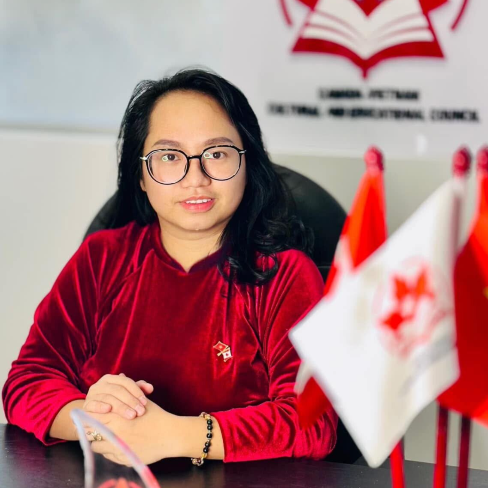
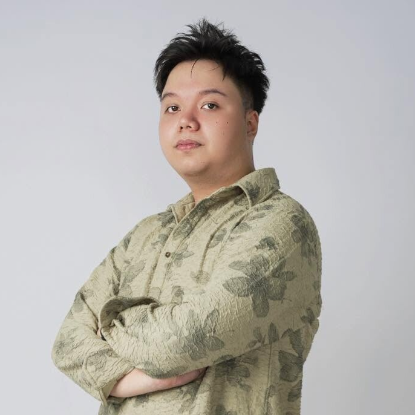
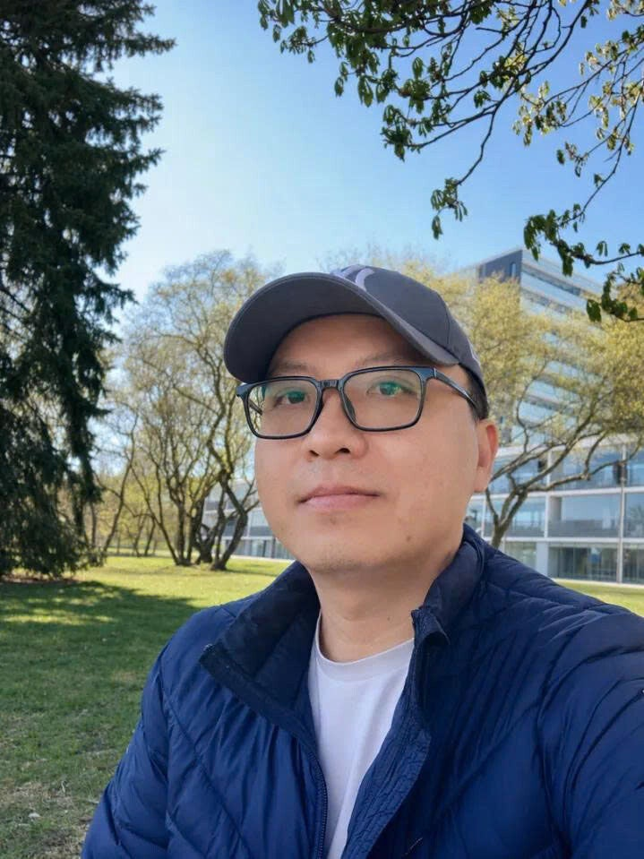
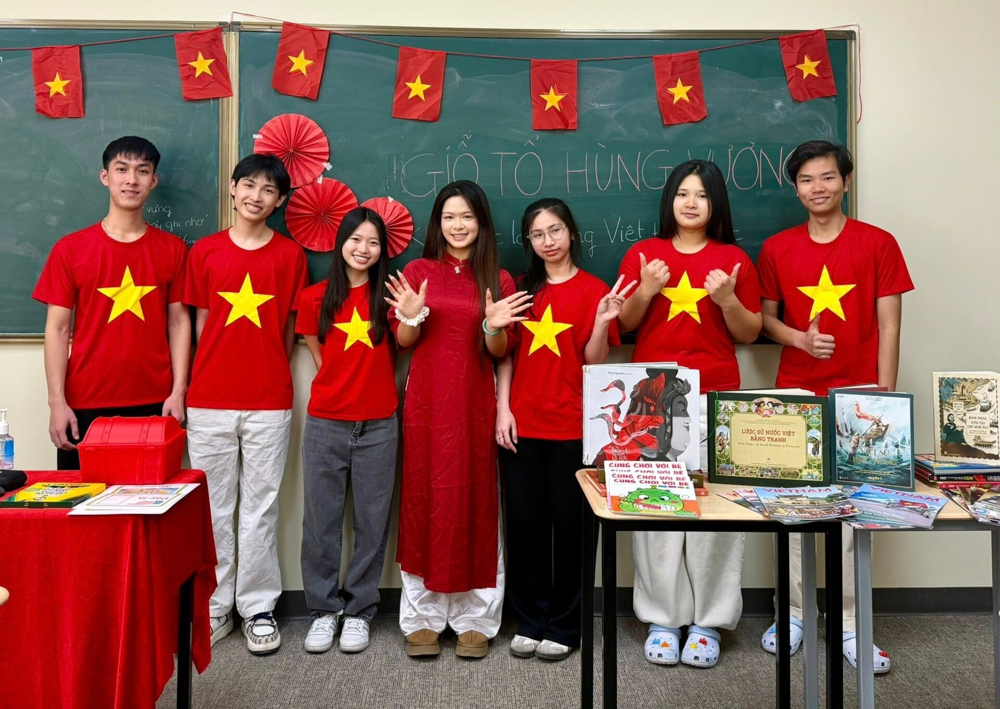

Phan Thị Quỳnh Trang
Founder / President
A Canada-based education leader, honored as one of the ‘Top 10 Outstanding Vietnamese Intellectuals 2025.’ She specializes in cultural diplomacy and strategic Canada-Vietnam partnerships.
The Canada Vietnam Cultural & Educational Council (CVCEC) is a federally incorporated not-for-profit based in Toronto. We help Vietnamese-Canadian children and youth keep their language and culture, help newcomer and international students settle into Canadian schools, and connect education communities in Canada and Vietnam.
For us, education diplomacy means building trust between people and institutions through learning: families, students, teachers and schools in Canada and Vietnam getting to know each other, sharing what works and creating opportunities together. It is people-to-people work, led by communities.
Read about our governance and accountability →Our council is driven by a distinguished team of experts committed to advancing education diplomacy and international cooperation.

Founder / President
A Canada-based education leader, honored as one of the ‘Top 10 Outstanding Vietnamese Intellectuals 2025.’ She specializes in cultural diplomacy and strategic Canada-Vietnam partnerships.
Chief Global Engagement Officer
A global engagement leader dedicated to empowering individuals through education. Her work focuses on fostering impactful international collaboration and strengthening global learning communities.
Chief Global Learning Officer
Dr. Ha Ngo brings academic expertise and a commitment to cultural preservation. Her research supports CVCEC’s mission to bridge cultural understanding through language and global engagement.
Academic Manager
Academic Manager Huyen Pham leads CVCEC’s curriculum strategy, leveraging 7+ years of experience to bridge educational standards between Vietnam and Canada.
Behind every program we run is a dedicated team of professionals, each bringing their unique expertise and enthusiasm to our organization.
Vietnamese Language Teacher
Serving as a Vietnamese language teacher in Manitoba, Ms. Ngo Ngoc Dieu Anh empowers students through language and cultural engagement.
Vietnamese Language Teacher
Ms. Nguyen Thi Thanh Binh is a dedicated Vietnamese language educator in PEI, passionately preserving cultural heritage and fostering community connections.
Vietnamese Language & Academic Director
Ms. Hanna (Hoang Minh Ha), Vietnamese Language & Academic Director at CVCEC, drives language curriculum development and cultural preservation programs that strengthen diaspora identity and youth engagement.
Academic Advisor
As Academic Advisor, Mai Do specializes in Vietnamese language instruction, designing heritage-based curricula that ensure effective, engaging, and culturally relevant learning experiences.

Performance Specialist
As Performance Specialist, Malvin Tran curates impactful concerts and music showcases, utilizing artistic events to foster cultural exchange and engagement within the Canadian community.
Our Global Technology & Innovation Team drives CVCEC’s digital transformation, blending global technical expertise with a heritage-driven commitment to advance educational impact in Canada.
Director of Technology & Engineering
As Director of Technology & Engineering, Hai Nguyen develops scalable digital platforms for Vietnamese language learning, expanding global access to high-quality education.
Data & AI Specialist
A specialist in AI and data-intensive systems, Phuc integrates cutting-edge machine learning into our frameworks to create intelligent, personalized educational solutions for our community.

Senior Software Specialist
With over 10 years of experience architecting large-scale banking and enterprise platforms, Nhat ensures CVCEC’s digital infrastructure remains secure, scalable, and high-performing.
The VYRH Youth Team is a growing network of young leaders and cultural ambassadors under the Canada Vietnam Cultural & Educational Council (CVCEC). Our mission is to empower the next generation of Vietnamese-Canadians to succeed as global citizens while remaining deeply anchored in their heritage.
Drawing on leadership experiences across civic and youth councils, our team champions youth empowerment and community engagement, helping emerging voices contribute meaningfully to Canada’s multicultural dialogue.
Meet the Viet Youth Readiness Hub →
Working with school boards, educators and community organizations under Canadian federal non-profit governance.
Led by Phan Thi Quynh Trang, bringing more than 10 years of experience in international education and teacher training.
Federally incorporated (Corp No: 1657486-6), ensuring accountability, governance transparency, and ethical standards across all initiatives.
A community-rooted approach to youth leadership, Vietnamese language and culture, and international education pathways.
We welcome collaboration with schools, organizations and individuals who share our vision of advancing education and cultural diplomacy.
See how to get involved → Contact us